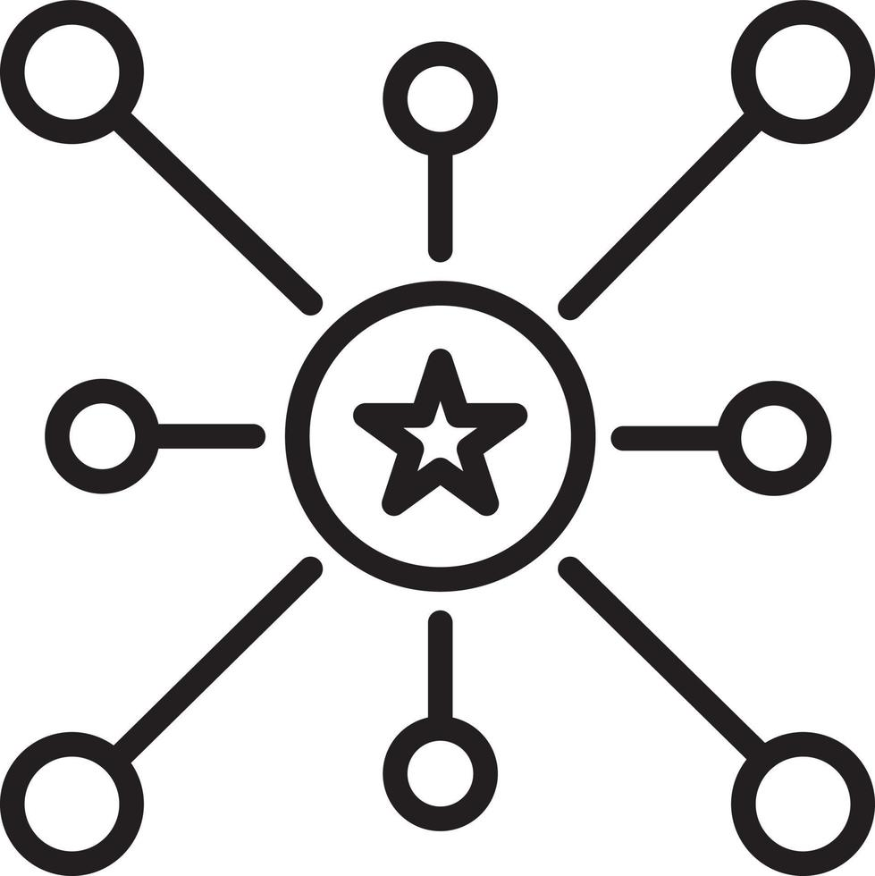

Projet Organic
Presenté par

Un groupe japonais international
Entités
-
Daramic : séparateurs pour batteries plomb-acide
Utilisations : véhicules automobiles, équipements industriels -
Celgard : séparateurs pour batteries lithium-ion
Utilisations : véhicules électriques, électronique portable
Lieux Géographique


Organigramme


Processus d'accueil
Présentation de l'entreprise
Consignes de sécurité
Remise des documents
Présentation des services IT
Communication
- Environnement Microsoft
Processus de travail
Affectation des tâches
Besoin interne
Suivi régulier
Structure organisationnelle
Centralisation des décisions
-
 Directives stratégiques
Directives stratégiques
-  Gestion décentralisée de l'infrastructure
Analyse des décisions
Stabilité organisationnelle
Flexibilité restreinte
Spécialisations des employés
Domaines informatique spécifique
Amélioration de la qualité de vie
Gestion budgétaire
Mon rôle
Présence Mondiale

Organigramme
Organigramme

 Molsheim
Molsheim
Mon rôle
Merck Group
Mon rôle
Communication
Merck group
Environnement
Eva
Wiki
IT4You
MS Teams
Analyse Merck
Analyse Merck
Relations
Analyse Merck
Centralisation & prise de décision
Siège:
Darmstadt, Allemagne
Darmstadt, Allemagne
Cas centralisés:
Embauche au CDI,
Projets ou Commandes prestigieux
Embauche au CDI,
Projets ou Commandes prestigieux
Cas décentralisés:
Embauche en alternance/stage,
Projets ou Commandes moins prestigieux
Embauche en alternance/stage,
Projets ou Commandes moins prestigieux
Analyse Merck
Spécialisation (Mon équipe)
- Data Analyste
- Rapports des projets aux supérieurs
- Tâches administratifs
- Suivre les progrès de l'équipe
- Data Analyste
- Rapports de projet au Team Manager
Analyse Merck
Type d'organisation
Merck vs Asahi Kasei
Merck vs Asahi Kasei
Comparaison
|
||
|---|---|---|
| Siège | Darmstadt, Allemagne | Tokyo, Japon |
| Culture | Européen | Japonnaise |
| CA | 15,3 Mrd € (2017) | 18,5 Mrd $ (2014) |
| Nb employés | 85000 | 25000 |
| Domaines | Electronics, Healthcare, Life Science | Material, Homes, Healthcare |
Merck vs Asahi Kasei
Implication des différences
Merck vs Asahi Kasei
Communication
| Merck | Asahi Kasei | |
|---|---|---|
| Moyens de communication | Teams, Outlook | Teams, Outlook |
| Fréquence de communication | Chaque jour à 11h | Une fois par semaine |
Merck vs Asahi Kasei
Traitement des dysfonctionnements
Perte de connection : Canaux alternatifs
Pannes électriques : Sources d'énergie de secours
Merck vs Asahi Kasei
Améliorations
Équipes de communication spécialisées